lslist的意思ls /etc/*release
cat /etc/*release
cat concatenate 的命令的缩写/etc/*release root）下的release 结尾的文件root）下的 etc 文件夹下的release 结尾的文件内容ls /etc/*release
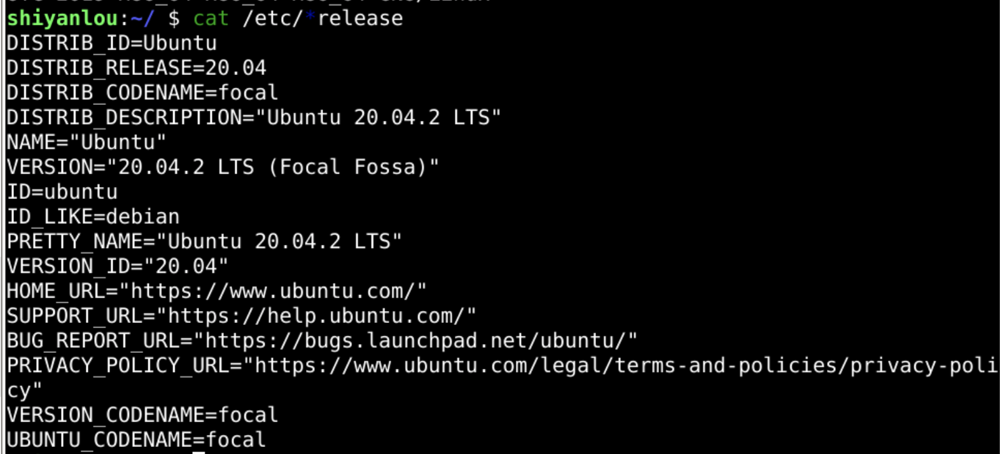
这样我们就可以得到
我们可以跳跃到/etc 那个位置上么？🤔
我们如何在各个文件夹之间任意跳跃呢？
cd change directory` cd /etc
ls *release
cat *release
/etc（根下的 etc 下）pwd
print working directory 比如
/boot 文件夹cd /boot
ls
pwd
boot 文件夹是干什么的呢？🤔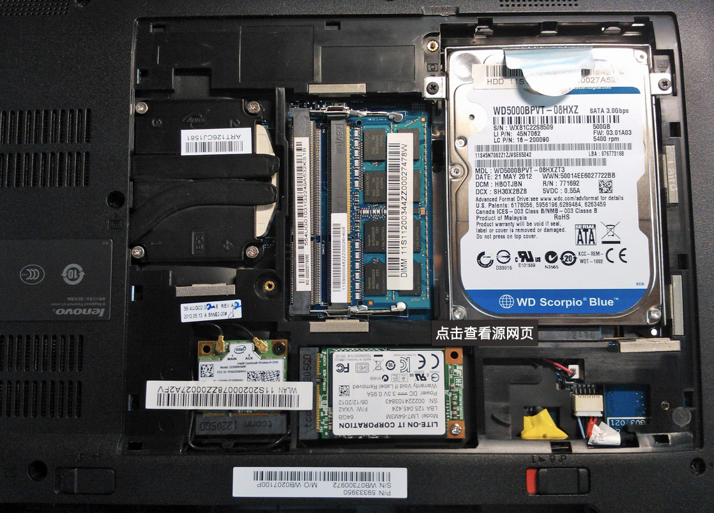
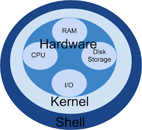
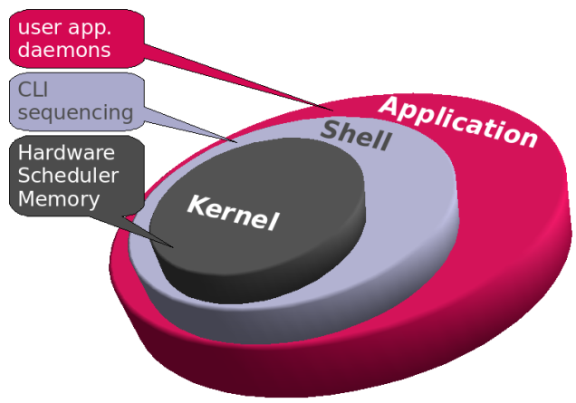
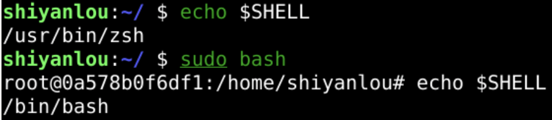
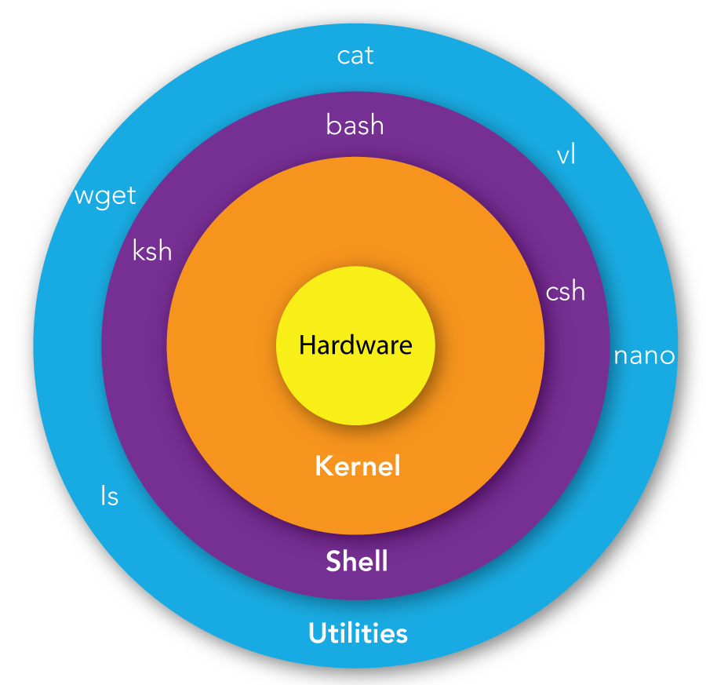
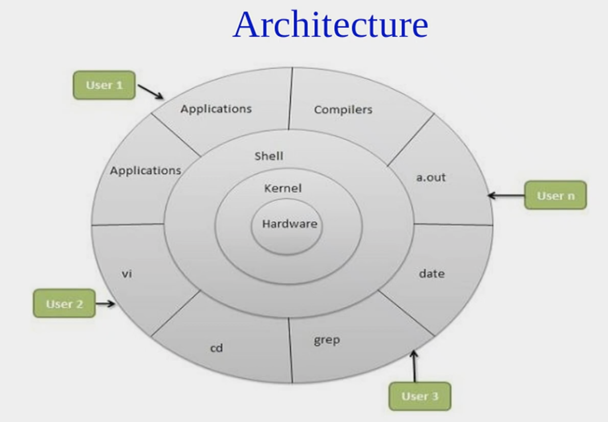
shell上有命令要求运行某个程序
分配内存
内存是能够直接被 cpu 操作的存储器
即使是超级计算机，原理也是一样的
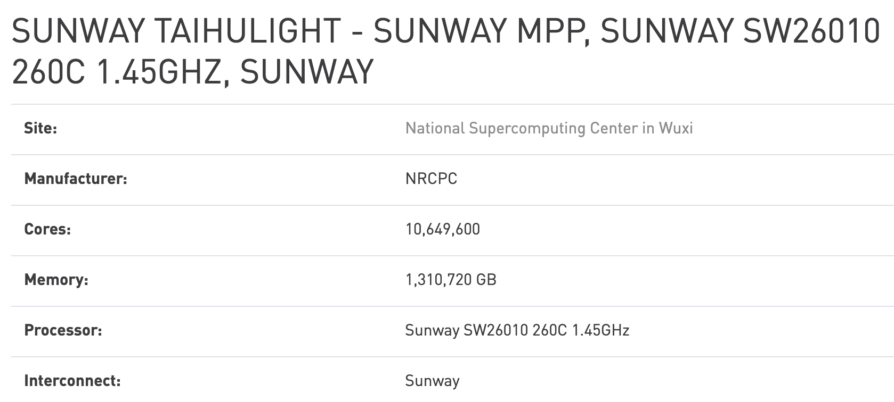
cd /proc
cat meminfo
pwd
proc 指的是 process（进程）
程序不是在硬盘
cd /proc
ls
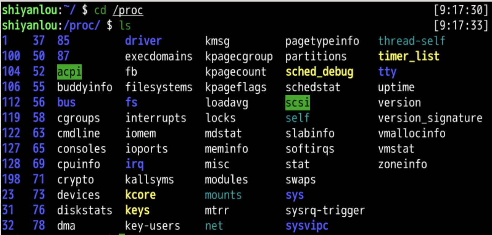
ps -efpsprocesses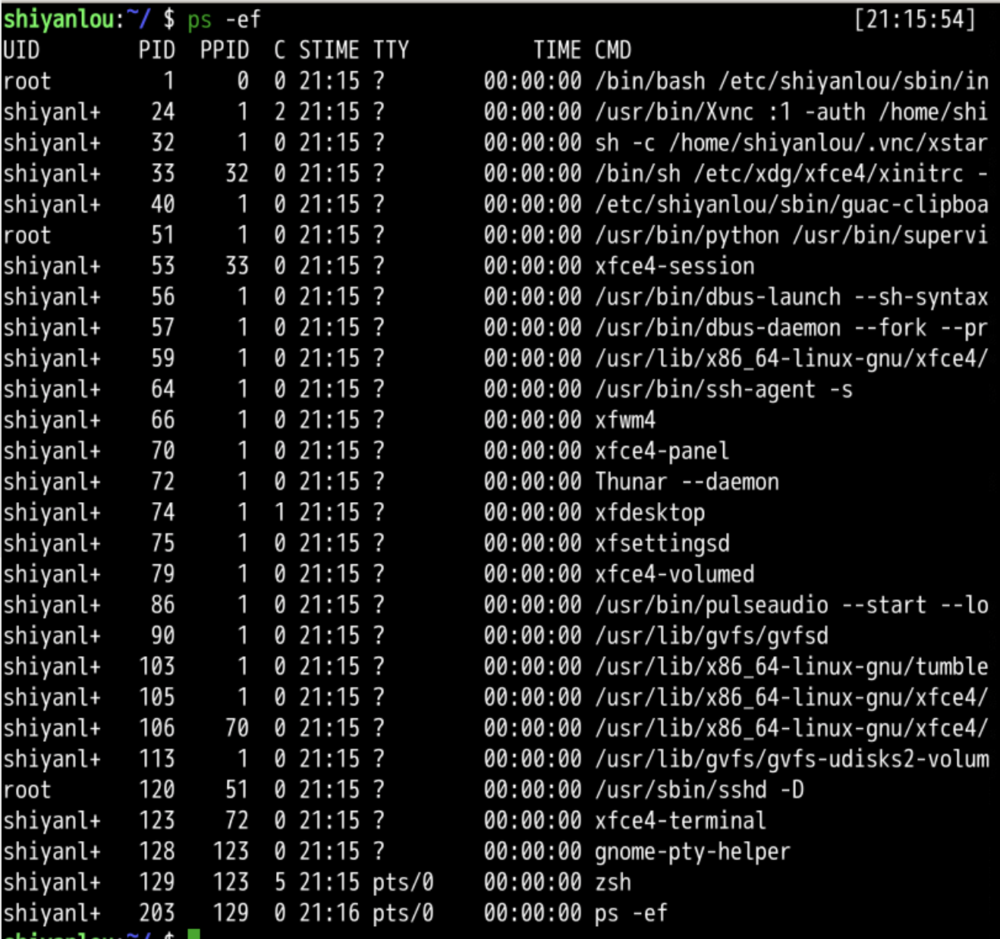
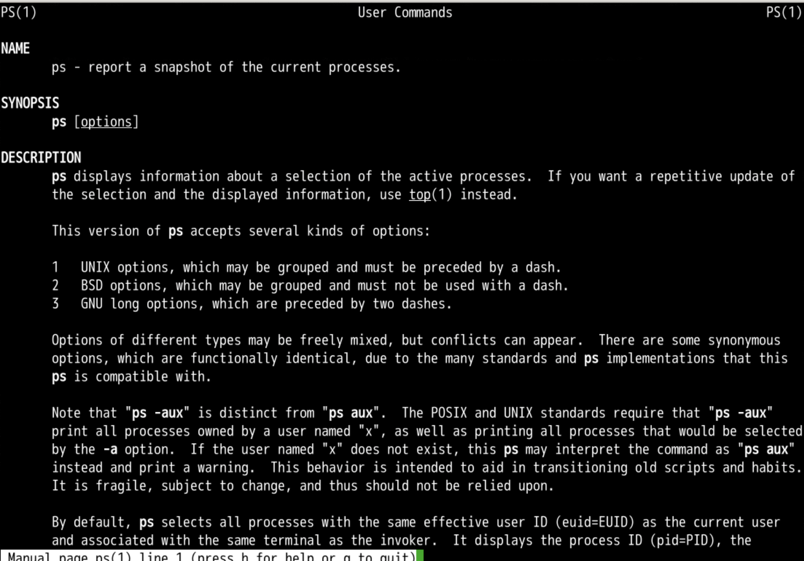
ps -ef之外ps aux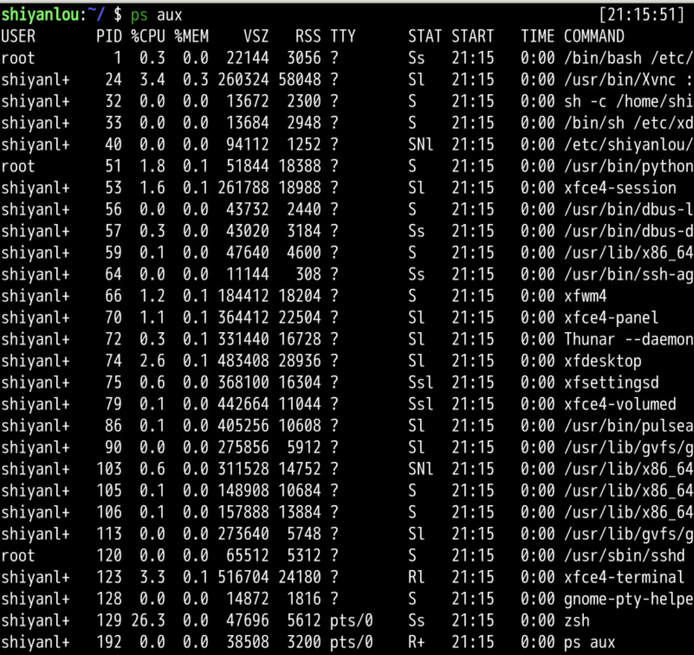
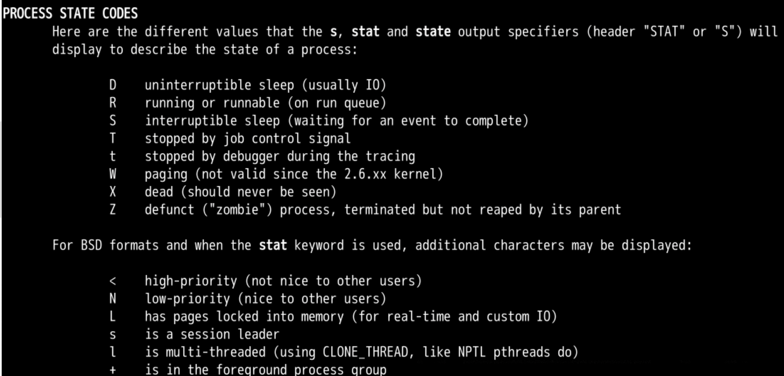
+ //位于后台的进程组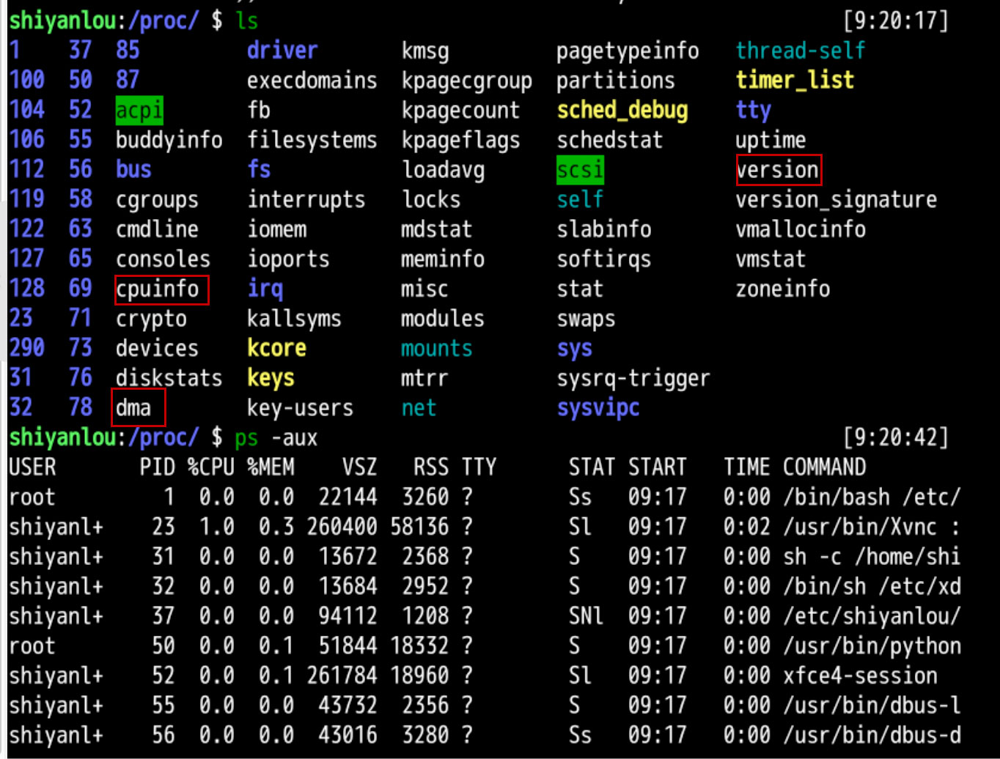
这里我们可以发现一些好像能看懂的单词
发现：